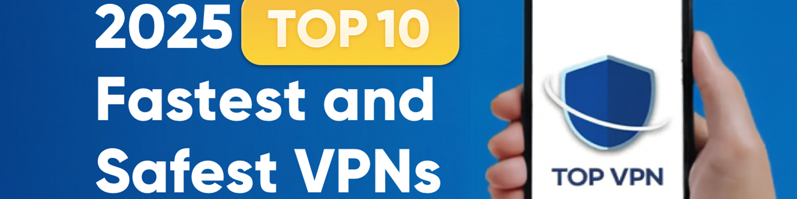

2025 年最值得信賴的 VPN：我們的十大精選
"呃，我應該選擇哪個 VPN...它們看起來都一樣！"
你有沒有遇到過這樣的困惑？市面上的VPN描述看起來都大同小異，都號稱自己是"最安全的"，但實際使用起來，它們之間到底有什麼區別呢？
我應該選擇 NordVPN 還是 ExpressVPN？沒人能保證萬無一失。

為了節省你搜索信息和比較評論的時間，我整理了 【2025 年最值得信賴的 10 款 VPN】 。
這次，我們不會重複每個人都擁有的"基本功能"，而是直接關注每個 VPN 的獨特優勢和劣勢。
為什麼要相信我的 VPN 評論？
我自稱是個數字完美主義者——對速度、穩定性和隱私近乎痴迷。 我不是網絡工程師，也不是技術專家。但我是那種視頻緩衝一下就會煩躁，個人數據可能受到威脅就會開始擔心的人。
對我來說，使用 VPN 不是可選的，而是必需的。
多年來，我親自測試了數十種 VPN：從跨地區播放 Netflix 和 YouTube，到安全使用公共 Wi-Fi、下載不常用的文件以及遠程工作。
我只推薦那些我真心願意長期使用的VPN——那些我認為真正有價值的服務。如果本指南能幫你避免浪費金錢或做出錯誤的選擇，那麼它就發揮了它的作用。
什麼是 VPN？
VPN（虛擬專用網絡）是一種加密連接技術，可在你的設備（計算機、智能手機、平板電腦等）和互聯網之間創建安全的"虛擬隧道"。它會加密你的數據並隱藏你的真實 IP 地址，保護你的在線活動免受不必要的監控。
為什麼要使用 VPN？
保護你的隱私並保持匿名
你在網上進行的一切活動——你的搜索、你點擊的鏈接、你訪問的網站——都可能被廣告商、追蹤器甚至你的互聯網服務提供商 (ISP) 追蹤。VPN 就像一道隱形的屏障：它隱藏你的真實 IP 地址並加密你的流量，防止第三方監視你的在線行為。
解鎖全球內容
你是否知道，在韓國觀看 Netflix 的內容與在美國或英國觀看的內容有所不同？許多節目、電影和遊戲都受到特定國家/地區的地理限制。VPN 讓你一鍵切換 IP 地址，從而可以無邊界地瀏覽全球網站、流媒體平台和遊戲服務器。
確保公共 Wi-Fi 安全
公共 Wi-Fi 網絡是網絡攻擊的熱點。黑客經常設置虛假網絡或攔截數據，竊取登錄憑據、銀行密碼、聊天記錄或敏感文件。VPN 可以在你和互聯網之間建立一條安全加密的隧道，即使在酒店、機場或咖啡館的 Wi-Fi 上也能保障你的數據安全。對於旅行者、遠程工作者和忙碌的商務人士來說，VPN 尤為重要。
繞過審查並訪問受限內容
在某些國家和地區，Google、YouTube、Instagram 或 WhatsApp 等平台可能會被屏蔽。VPN 可以幫助你自由訪問這些網站和應用，為你打開一扇通往世界的大門。對於外籍人士、國際學生和全球專業人士來說，VPN 可確保你無論身在何處都能安全、不受限制地訪問互聯網。
2025年值得信賴的十大VPN
| VPN | 無日誌 | 安全功能 | 成本效益 | 速度 | 安全 | 服務器支持國家 |
|---|---|---|---|---|---|---|
| NordVPN | ⭐⭐⭐⭐⭐ | ⭐⭐⭐⭐⭐ | 上 | 10分 | 高 | 164 |
| ExpressVPN | ⭐⭐⭐⭐⭐ | ⭐⭐⭐ | 中間 | 9.5分 | 高 | 105 |
| Surfshark | ⭐⭐⭐⭐ | ⭐⭐⭐⭐⭐ | 最好的 | 9分 | 高 | 100 |
| 質子VPN | ⭐⭐⭐⭐ | ⭐⭐⭐ | 中間 | 6分 | 高 | 122 |
| Mullvad VPN | ⭐⭐⭐⭐ | ⭐⭐⭐ | 中間 | 6分 | 高 | 49 |
| PureVPN | ⭐⭐⭐ | ⭐⭐⭐ | 中間 | 5分 | 高 | 65 |
| CyberGhost VPN | ⭐⭐⭐ | ⭐⭐ | 中間 | 6分 | 高 | 100 |
| AdGuard VPN | ⭐ | ⭐ | 降低 | 5分 | 中間 | 50 |
| VPN無限 | ⭐⭐ | ⭐⭐ | 降低 | 5分 | 降低 | 55 |
| 最快的VPN | ⭐⭐ | ⭐⭐ | 降低 | 6分 | 中間 | 49 |
1：NordVPN——2025年最佳VPN
持續優化速度和穩定性
在我看來，NordVPN 絕對當之無愧地位居第一——我相信大多數 VPN 用戶都會同意這一點。自 2021 年以來，NordVPN 的性能穩步提升，尤其是在速度和連接穩定性方面。升級到 10Gbps 服務器網絡後，連接體驗幾乎與不使用 VPN 瀏覽一樣流暢。無論你是在線觀看高清內容還是下載大型遊戲文件，都幾乎不會出現任何明顯的延遲。
真正讓我印象深刻的是，NordVPN 支持最多 10 台設備同時連接。 這意味著你可以與家人或朋友共享，同時享受流暢的性能，無需擔心網速變慢。其自有的 NordLynx 協議 在保持頂級加密的同時，還能保持與原始網絡速度驚人的接近。過去對速度的擔憂現在完全消失了。在 2025 年，NordVPN 憑藉其無與倫比的性能、價值和安全性脫穎而出。
頂級安全性：最安全的VPN
NordVPN 被公認為最安全的 VPN 之一。它提供雙重 VPN 服務，將你的流量路由到兩台服務器（而非一台），從而增加了額外的保護。這讓我安心，因為即使一台服務器被入侵，第二層保護也能幫助降低潛在風險。
NordVPN 總部位於巴拿馬，不受數據保留法律的約束，這與其嚴格的無日誌政策完美契合。在十多年的運營中，它從未將用戶數據移交給任何機構——這也是我信任其隱私承諾的另一個原因。
NordVPN 的另一大優勢在於其全球範圍內 全天候實時聊天和電子郵件支持 。這確實讓用戶體驗更加流暢、安心。總而言之，在隱私和數據保護方面，NordVPN 無疑是我用過的最令人印象深刻的 VPN 之一。
龐大的全球服務器網絡
截至 2025 年 7 月，NordVPN已在164 個國家和地區運營著7，155 多台服務器的龐大網絡。雖然一些競爭對手可能擁有更大的服務器數量，但真正重要的是服務器的質量和性能。在實際使用中，NordVPN 始終提供快速、流暢的連接，無延遲或緩衝。
最適合誰
遠程工作者、經常旅行的人、重度流媒體用戶、精通技術的高級用戶、擁有多台設備的家庭以及注重隱私的個人。
優點和缺點
優點
- 嚴格的無日誌政策 ——NordVPN 總部位於巴拿馬，合法運營且不存儲用戶日誌，確保完全的隱私。
- 超值 – 價格實惠的 2 年計劃，功能強大。
- Double VPN 和 Onion Over VPN – 額外的加密層和對 Tor 網絡的安全訪問。
- NordLocker 加密雲存儲 – 使用安全的雲存儲保護你的文件。
- 2FA 支持 – 通過雙因素身份驗證增加額外的帳戶保護層。
- 提供專用 IP – 可選法國、德國和美國等國家的固定 IP 地址（需額外付費）。
- 同時使用 10 台設備 - 非常適合家庭或小團隊。
缺點
- 速度提升 ——以前這是一個問題，但現在 NordVPN 已經解決了這個問題，並且跻身業內最快的速度之列。
價格實惠
NordVPN 的速度和安全性與其他頂級 VPN 不相上下，但價格卻更加親民。其兩年套餐比 ExpressVPN 的一年套餐便宜得多，對於追求強勁性能又不想花費過多的用戶來說，NordVPN 是最佳選擇之一。
更好的是，如果你通過一些合租平台訂閱，你可以獲得比官方價格更大的折扣 - 這使得 NordVPN 不僅功能強大，而且極具成本效益。
2：ExpressVPN — 速度與安全性的首選

全球認可的速度
ExpressVPN 給我的第一印象就是它的速度——它比我試用過的大多數 VPN 都快得多。儘管 ExpressVPN 的服務範圍"僅"在 105 個國家/地區，但它的表現始終優於那些在全球擁有 8，000 台甚至 10，000 台服務器的服務。它的速度和穩定性簡直是另一個層次。
真正突出的是它的種子下載性能，明顯優於許多競爭對手。如果你全年定期下載大文件，ExpressVPN 是最佳選擇之一。其大多數服務器已升級到 10Gbps，無論你選擇哪個服務器，都能確保快速穩定的連接。
長期可靠性和強大的安全性
最讓我放心的是 ExpressVPN 的安全設置。它位於英屬維爾京群島，嚴格執行無日誌政策——這意味著它不會存儲用戶活動或連接數據。即使政府要求提供信息，它也無需提供任何信息。
ExpressVPN 也是首家採用純 RAM服務器的主流提供商，所有數據都存儲在易失性內存中，並在關機或重啟時自動擦除，這提供 了額外的保護。 其內置密碼管理器採用零知識加密，因此只有你自己才能訪問你的憑據，甚至提供商也無法訪問。
簡而言之，ExpressVPN 在隱私和安全方面的表現無與倫比。它是少數幾個讓我感到完全安全的 VPN 之一，即使是處理敏感任務也一樣安全。
可靠的高性能服務器
ExpressVPN在 105 個國家/地區運行著 3，000 多台服務器——數量雖非市面上最多，但卻是最可靠的服務器之一。每台服務器都升級到 10Gbps，提供快速穩定的連接。
一些 VPN 提供商使用低規格硬件來增加服務器數量，犧牲質量以求數量。ExpressVPN 則採取了相反的做法：服務器數量較少， 但配置高端 ，性能始終強勁。根據我的個人體驗和其他用戶的評價，ExpressVPN 在實際使用中提供了頂級的可靠性。
最適合誰
遠程工作者、國際旅行者、重度流媒體用戶、P2P 和 torrent 用戶以及注重隱私的個人。
優點和缺點
優點
- 速度和穩定性 ：卓越的性能，使其成為流媒體和 P2P 下載的首選。
- Lightway 協議 ：一種性能優於 WireGuard 的專有協議。
- P2P 支持 ：所有服務器都支持 P2P，非常適合大量下載用戶。
- 嚴格的隱私保護 ：無日誌政策，受英屬維爾京群島法律保護，並使用 TrustedServer 技術增強隱私。
- 分割隧道 ：允許用戶為不同的應用程序定制流量，提供更多控制。
- 全面的設備支持 ：跨平台支持多種設備，最多可同時連接 8台設備 。
缺點
- 價格較高 ：與其他一些 VPN 相比，ExpressVPN 的定價相對昂貴。
- 路由器設置複雜性 ：對於不懂技術的用戶來說，設置路由器可能具有挑戰性（儘管可以使用 Aircove 路由器更輕鬆地進行設置）。
定價
雖然ExpressVPN 6.67 美元 的折扣套餐比其他 VPN 價格更高，但其卓越的服務和性能贏得了包括我在內的忠實擁躉。它始終佔據市場領先地位是有原因的。新的 "兩年套餐"現已推出，可在韓國 使用，為我們提供了更大的靈活性。此外 ，24 個月 的額外獎勵也讓這項優惠更具吸引力。

3：Surfshark — 2025 年最具價值的 VPN

速度和穩定性
Surfshark雖然是 VPN 市場中相對較新的參與者（成立於 2018 年），但在速度和穩定性方面已迅速跻身頂級行列。在實際測試中，連接到附近服務器的 下載速度始終超過 400 Mbps ，足以滿足 Netflix 和 Disney+ 等平台上的 4K 流媒體播放需求。在許多情況下，其體驗幾乎與不使用 VPN 的互聯網使用體驗相同。
Surfshark 還使用僅 RAM 服務器和 WireGuard 協議，提供快速的連接速度和穩定的性能。總的來說，它是目前最均衡的 VPN 之一。
VPN 和防病毒軟件合二為一
Surfshark 的功能遠超標準 VPN。除了 無日誌服務器 和可自定義的 Multihop（雙重 VPN） 以增強隱私性外，它還包含一套安全工具：防病毒軟件、身份保護、數據泄露監控和靜態 IP 支持——所有這些旨在兼顧 在線匿名性 和 賬戶安全 。
別名電子郵件地址 、 隱藏收件箱 和 美國虛擬電話號碼 等創新附加功能使其脫穎而出。其內置的防病毒解決方案 Surfshark One 性能堪比主流安全品牌。如果你正在尋找一體化 VPN 和網絡安全解決方案 ，Surfshark 是你非常可靠的選擇。
廣泛的服務器選擇
Surfshark 在 100 個國家/地區提供3，000 多台服務器，並提供多種服務器類型，尤其適合注重隱私的用戶。
多跳 功能支持雙重加密路由，顯著提升在線匿名性。對於需要 穩定訪問流媒體服務或金融平台的 用戶，Surfshark 還提供 專用 IP 地址（每月 額外支付3.75 美元） ，以避免 IP 共享問題，確保連接不中斷。
最適合誰
注重預算的用戶、多設備家庭、注重隱私的個人以及有區域切換需求的用戶。
優點和缺點
優點
- 無限設備連接 — 適合家庭或團體共享
- 強大的加密功能、多平台支持和豐富的功能
- 價格實惠，長期優惠
- 匿名電子郵件、靜態 IP 和美國電話號碼等增值工具
- 完成獨立無日誌審計——完全透明且值得信賴
缺點
- 總部遷至荷蘭 （九眼聯盟成員國之一），但仍受嚴格的 GDPR 監管
- 某些高級功能（例如 Surfshark One）需要額外訂閱
為什麼它的價值最高
我使用 Surfshark 很久了，經過多次實際測評，我可以自信地說它性價比最高。每月只需 700 韓元左右，即可無限量共享設備，幾乎可以毫不費力地與朋友分享。
速度穩定，功能不斷更新（例如 Multihop 和內置防病毒軟件），並提供 30 天退款保證 ，讓你既無風險又經濟實惠。兩年套餐價格尤其实惠，在性能和價格之間實現了無與倫比的平衡。

4：ProtonVPN——專注於安全和隱私保護

速度和穩定性
我滿懷期待地試用了 Proton VPN，尤其是它的 VPN 加速器技術 ，號稱可將速度提升高達 400%。然而，在親自測試之後，我發現結果有些誤導。即使速度 提升了 200% ，速度仍然比預期慢得多，尤其是在主要國家的服務器上。
對於帶寬需求較高的用戶，Proton VPN 可能無法提供你所期望的性能。
安全
ProtonVPN 的突出特點之一是其 安全核心服務器 ，非常適合擔心互聯網審查或政府監視的用戶。
它在中國和俄羅斯等高風險地區提供額外的隱私保護。但是，使用 多跳連接 可能會降低速度，因此你需要根據自身需求在隱私和速度之間取得平衡。
服務器網絡
截至 2025 年 7 月 ，ProtonVPN 的Tor 服務器已覆蓋超過122 個國家/地區，擁有超過11，048 台服務器，提供廣泛的覆蓋範圍和安全性。美國和歐洲的許多調查機構都運營多個節點，使用 Tor 網絡追蹤犯罪分子，這使得 Tor 成為一個潛在的危險區域。
此外，由於 Tor 網絡上的出口節點不受保護，因此通常認為使用 VPN 是最安全的。
最適合誰
ProtonVPN 非常適合開源倡導者、注重隱私的用戶以及需要高級匿名性的用戶。它也非常適合已加入Proton 生態系統（例如 ProtonMail 和 ProtonDrive） 的用戶。
優點和缺點
優點
- 開源客戶端， 操作透明、值得信賴
- 強大的 安全功能 ，如 Secure Core 和 Tor over VPN
- 與 ProtonMail 、 ProtonDrive 和其他工具集成，創建完整的生態系統
- 已完成 無日誌審計 ，並明確承諾隱私保護
- 總部位於 瑞士 ，一個擁有隱私友好法律環境的國家
缺點
- 速度一般，尤其是在安全核心模式下
- P2P 支持有限，導致下載體驗不佳
- 與同等評級的 VPN 相比，價格更高（Proton Unlimited 起價為 7.99 美元/月）
- ProtonMail 提供 IP 信息後聲譽受損（雖然與 VPN 服務無直接關係，但影響了用戶的看法）
定價和無限計劃
雖然 ProtonVPN Plus兩年計劃的價格為 每月 2.49 美元，但仍然比其強勁競爭對手Surfshark貴得多，後者每月 僅需2，700 韓元。
如果你選擇無限套餐，你將獲得 25 個加密日曆、500GB 總存儲空間、版本歷史記錄、文件共享加密等功能。企業用戶可以參考商務套餐，了解訪問控制和端點安全等附加功能。

5：Mullvad VPN — 隱私至上，但性能平庸

速度和穩定性
Mullvad VPN 在美國、日本、新加坡、英國和巴西等地使用 OpenVPN 和 WireGuard 協議進行的測試中表現始終良好，速度波動極小，整體數據傳輸質量良好。然而，其服務器覆蓋範圍有限，僅覆蓋 49 個國家/地區 ，服務器數量約為 693 台 （其中 526 台為租用服務器）。
在亞洲，Mullvad 僅有 68 台服務器 ，導致某些地區的連接質量不佳。在韓國進行的速度測試顯示，速度明顯下降且波動較大。如果你最看重速度，Mullvad 並非最佳選擇。
獨特的隱私政策
Mullvad 的與眾不同之處在於其隱私至上的理念。創建賬戶無需任何個人信息，只需生成一個 16 位字符的賬號 即可。它甚至支持通過郵件進行現金支付，進一步增強了匿名性。Mullvad 致力於開放性和開源代碼，並自 2023 年起改用 基於 RAM 的服務器 ，重啟後數據會被清除，從而顯著降低了數據泄露的風險。
此外，Mullvad 還與 Firefox 的創建者Mozilla 基金會合作，這體現了其對隱私和安全的承諾。
較小的服務器網絡
Mullvad 的服務器網絡相對較小，在 49 個國家/地區僅有693 台服務器 ，其中 167 台 為自有服務器，其餘為租用服務器。雖然服務器數量有限，但它仍然覆蓋了關鍵地區，尤其是美國（246 台服務器）和歐洲（330 台服務器）。然而，它在亞洲的覆蓋範圍很窄，只有 68 台服務器 。
在韓國進行速度測試期間，我注意到速度有顯著變化，特別是連接到某些地區的服務器時，速度損失和波動較大。
最適合誰
Mullvad 非常適合注重隱私的用戶、開源愛好者以及精通技術的用戶。對於短期旅行者以及不注重流媒體服務的用戶來說，它也是一個不錯的選擇。
優點和缺點
優點
- 註冊時無需提供個人信息，確保匿名
- 支持現金和加密貨幣支付
- 強大的安全功能和出色的廣告攔截功能
- 開源，運營透明
缺點
- 不支持解鎖 Netflix 或 Prime Video等主流流媒體服務
- 沒有實時聊天支持
- 服務器數量有限，亞洲地區表現不佳
- 每月訂閱 5 歐元 ，無折扣或年度計劃
- 2025年退款期限從 30天 縮短至 14天
每月定價
Mullvad的月費固定為 5 歐元 （約合 5.18 美元 或 7，500 韓元 ），無論訂閱期限如何。沒有折扣或年度付款計劃。此外，自 2025 年起，退款期限已從 30 天 縮短至 14 天。Mullvad將面臨來自速度更快、價格更低的Surfshark 等在歐洲排名第三的競爭對手的激烈競爭，超越競爭對手將是一項挑戰。

6：PureVPN——一家正在卷土重來的老牌服務提供商

速度和穩定性
PureVPN 擁有遍佈65 多個國家的6，000 多台服務器網絡，其中 美国 和 欧洲 地區尤為突出。美国和法国等重点地區配备了 20Gbps 的高速服務器 。尽管網絡覆盖廣泛，但實際速度表現平平，尤其是在 亚洲 ，服務器數量有限（仅 560 台服務器 ）。因此，东亚用戶的連接穩定性和速度可能略有不足。不过，其網絡基礎设施仍在不断扩展和優化中。
改變管轄範圄以加強安全
我之前对 PureVPN 的印象並不好，但最近重新評估后，我發現它的表現远超预期，尤其是在合約条款和管轄权方面。PureVPN 现已将其管轄权遷移至 英属维尔京群岛 ，這显著提升了安全性。与之前位於 香港 的管轄权相比，這一變化让我对其隱私保護更加放心。
此外，PureVPN 已經通過了 四次外部审核 ，並獲得了 ISO 27001 信息安全管理认证，這进一步增強了我对其安全性的信任。
最適合谁
對於注重預算的初學者 、 跨平台用戶 以及有 高級配置需求 的用戶來說， PureVPN 是一个不錯的選擇。對於不以流媒體解鎖為主要用途的用戶來說，它也是一个不錯的選擇。
優點和缺點
優點
- 遍佈眾多國家的 廣泛服務器網絡
- 全天候实時聊天，提供 快速客戶支持
- 價格具有競爭力 ，適合長期使用
- 獲得ISO 27001认证並通過 四次外部安全审核
缺點
- 實際測試中 速度较慢，尤其是在亚洲
- 流媒體解鎖性能不穩定 ，不適合 Netflix 和其他娱乐服務
定价
PureVPN提供三種不同的套餐：Max、Plus 和 Standard。如果你只需要 VPN 功能，那麼 Standard 套餐是最佳選擇，因為它專注於提供基本的 VPN 服務，不包含密碼管理器或文件加密应用程序等額外功能。
两年計劃的 費用為 每月 2.14 美元 ，按當前汇率計算約為 2，900 韩元 ，價格極具競爭力。

7：CyberGhost VPN — 服務器眾多，但性能不穩定

速度和穩定性
CyberGhost VPN 擁有覆盖100 多個國家/地區的12，000 多台服務器的全球網絡，使其成為服務器數量最多的 VPN 提供商之一。然而，實際性能並不總是与數據相符，尤其是對於 韩国和亚洲用戶 而言，他們反映速度一般且連接不穩定。日本服務器的性能略好一些，但總體而言，其網絡性能並不夠出色。雖然 P2P 專用服務器 分布廣泛，但其速度也不太理想。
積極的一面是，它在 欧洲和美国的 表現有所改善，為 Netflix 和 BBC iPlayer 等平台提供了穩定的流媒體解鎖，為对媒体流媒體感兴趣的用戶增加了價值。
安全
在使用 CyberGhost 時，我对它的隱私政策有些担忧。尽管 CyberGhost 聲稱自己不屬於任何情報聯盟，並且已經通過了 德勤的隱私審計 ，但由於它註冊於一家 美国公司 ，並根據 罗马尼亚法律 （与英国有关联）運營，這帶來了一些法律上的复杂性，使其隱私保護措施有些不明确。
在功能方面，CyberGhost 支持主流平台，最多可同時連接 7 台設備 。它还包含 广告拦截 和 流媒體優化 等实用功能，但缺少 多跳路由 等功能，並且某些安全工具在不同系統上的性能不一致。
流媒體服務器
訪問流媒體服務器時，你會發現一长串选项，每個选项都針對不同的國家/地區和不同的服務提供專用服務器。這對於專注於特定流媒體服務的用戶來說非常有用。
最適合谁
對於 欧洲和北美的流媒體用戶 、優先考慮各種服務器的用戶以及对價格敏感的用戶來說，CyberGhost 是一个不錯的選擇。然而，對於需要高級隱私功能的用戶來說，它不太合适。
優點和缺點
優點
- 行業領先的服務器數量 （100 多個國家/地區的 12，000 多台服務器）
- 24/7 实時聊天支持
- 廣泛的 專用 IP 选项
- 支持使用 專用 P2P 服務器進行種子下載
- 45天退款政策
缺點
- 亚洲 （尤其是 韩国） 的 連接不穩定 且 速度较慢
- 没有 1 年計劃 ，只提供 6 個月 或 2 年計劃
- 缺乏高級隱私功能，例如 多跳 或 仅 RAM 服務器
定价和長期退款政策
如果你選擇 6 個月的套餐 ，價格仍然合理。但是，如果想長期使用， 2 年套餐 是目前最具吸引力的選擇，價格約為 2，830 韩元/月 ，極具競爭力。更令人放心的是 45 天的退款政策 ，這是业内最长的退款政策之一，让我在決定是否訂閱時更加安心。
总的來說，如果你正在尋找 實惠的價格 和 長期價值 ，CyberGhost 的2 年計劃絕對值得考慮，尤其是与其他 VPN 相比，因為它的 成本效益 非常突出。

8：AdGuard VPN — 从广告拦截到隱私保護

速度和穩定性
AdGuard VPN 使用其专有協議（AdGuard 協議），该協議基於 HTTP/2 ，旨在使其与 HTTPS 流量 难以区分，從而提供一定的防拦截功能和速度優勢。在常规瀏覽和网页訪問中，其速度不錯，性能穩定。然而，在 P2P 或 BT 下載 等高流量场景下，速度非常慢，不適合用於種子下載。
AdGuard 目前支持約 50 个國家/地區的 服務器。雖然不如主流 VPN 品牌覆盖範圄廣泛，但足以满足一般使用需求。有時，服務器連接可能會不穩定，偶爾會断开連接。
安全
在使用 AdGuard VPN 時，我注意到其隱私保護和安全功能既有優點，也有缺點。其中一个主要缺點是 AdGuard 缺乏 外部安全审核 或 透明度报告 ，這可能會让那些对日誌特別敏感的用戶感到担忧。
積極的一面是，AdGuard 的支持渠道有些有限。它没有实時聊天支持，只能通過电子邮件、Telegram 群组和官方论坛獲得幫助，這在你需要快速獲得幫助時可能會很不方便。
服務器網絡
AdGuard 在59 个國家的 70 个城市 设有服務器。
最適合谁
AdGuard 非常適合以前依赖其广告拦截功能的用戶、需要 VPN 進行瀏覽的用戶、想要尝试新兴協議的用戶以及对 隱私 需求较低的個人。
優點和缺點
優點
- 可与广告拦截功能一起使用（尤其适用於 Android）
- 免费试用，提供 3GB 數據
- 多平台支持，包括瀏覽器扩展
缺點
- 没有实時聊天支持，响应時間慢
- P2P 下載速度非常慢
- 偶爾服務器不穩定
定价（免费版）
使用AdGuard VPN后，我發現它的定价非常吸引人，尤其適合預算有限的用戶。 免费版 每月提供 3GB 流量，雖然可能不多，但對於轻度用戶來說已經足夠了。如果需要長期使用，你可能需要考慮付费版。付费套餐提供月度、年度和三年的计费选项，其功能物有所值。

9：VPN Unlimited — 功能丰富，終身套餐價格實惠

速度和穩定性
尽管VPN Unlimited的声誉曾因其隱私政策而受到质疑，但它在速度測試中的表現依然稳健，尤其是在 北美 和 亚洲 的主要节点，网页加载和視頻播放都非常流畅。然而，它的服務器分布不如主流VPN品牌密集，某些地區的連接可能不太穩定，尤其是在高峰時段，可能會出现轻微的缓冲。
安全
VPN Unlimited 在安全性和功能性方面都表現出色。它支持多种協議，其中最让我印象深刻的是其专有的KeepSolid Wise協議。该協議支持 TCP 、 UDP 和 TLS ，使其能夠适应各種網絡环境並提供更灵活的安全性。對於注重安全性的用戶來說，這种多協議支持非常有用。
付費用戶还可以訪問多個國家的专属服務器和 專用IP ，確保速度和匿名性。此外，它集成了 MonoDefense安全套件 ，其中包括密碼管理器、DNS防火墙和SmartDNS，提供全面的安全體驗。
服務器網絡
VPN Unlimited 提供 55 个國家 （遍佈 80 个城市 ）的 IP 地址 ，总共約 3，000 台服務器 。
終身計劃
對於那些寻求 "一次購買，終身使用" 选项的人來說，VPN Unlimited 的 終身計劃 很有吸引力，特別是對於对日誌記錄政策不太敏感的用戶和那些寻求附加功能的用戶，特別是在 北美 、 欧洲 或 新加坡 。
優點和缺點
優點
- 終身計劃 提供较低的長期成本
- 多种協議选项，包括具有強大渗透能力的专有 KeepSolid Wise
- 專用 IP 和 专属服務器 ，可實現高度定制
- 集成 MonoDefense 安全套件
缺點
- 日誌記錄政策不明确 ，數據可能存儲长达 7 年
- "无限設備"的 说法具有误导性——額外的設備需要額外付费
- 每月/每年訂閱的 性价比低於 Surfshark等競爭對手
定价
使用 VPN Unlimited 后，我發現它的訂閱方案非常灵活，可以满足不同的用戶需求。不过，價格偏高。MonoDefense 安全套件每年 約105，000 韩元，而 終身套餐 则為 149，000 韩元 。雖然功能全面，但對於預算有限的用戶來說，價格可能略高。
此外，专属服務器 和 專用IP 的成本相对较高，終身专属服務器的價格約為 600美元 ，專用IP的價格為 每月14.99美元 （按年付费则約為 每月12.50美元 ）。這些功能确实增強了安全性和隱私性，但是否值得投资取决於個人需求和預算考慮。

10：FastestVPN — 高價值的"全能預算"VPN

速度和穩定性
尽管名為"最快"，FastestVPN 的速度表現並非頂級。不过，它在 美国 、 英国 和 德国 等主要國家/地區提供了令人满意的速度和穩定性，足以满足日常网页瀏覽和視頻播放的需求。
雖然它的速度不如 ExpressVPN 或 NordVPN 等頂級 VPN 品牌，但其連接質量穩定，断线率低，延遲控制合理。總體而言，它的表現比同价位的許多其他產品都要好。
安全
我最初将 FastestVPN 视為典型的"廉价低质"VPN，因此很长一段時間内我从未认真考慮过它。然而，在重新审视它之後，尤其是从隱私保護的角度，我的看法发生了改變。FastestVPN 的总部位於 开曼群岛 ，该司法管轄区没有數據保留法律，並且以保護用戶數據和匿名性而闻名。對於强调 无日誌政策的 VPN 來說，這是一个理想的地點。
真正改變我看法的是， 2023年1月 ，FastestVPN通過了AltiusIT進行的第三方无日誌審計，這是一个重要的里程碑。雖然它的價格仍然较低，但我現在認為它是一款兼顾隱私、安全和性价比的VPN服務。對於注重匿名性且預算有限的用戶來說，FastestVPN值得重新考慮。
服務器網絡
FastestVPN 在49 个國家/地區 提供超過 800 台 服務器，對於廉价 VPN 來說，這一水平高於平均水平。
最適合谁
FastestVPN 非常適合注重預算的用戶、VPN 初學者、多設備用戶、需要广告拦截和多跳加密等功能的高級用戶，以及关心隱私但不需要极端严格的用戶。
優點和缺點
優點
- 價格低得令人难以置信 （ 終身 計劃仅需 40 美元 ）
- 功能丰富， 包括广告拦截、多跳、隧道分离和密碼管理器
- 支持多种平台，包括 Linux 和主要发行版
缺點
- 高峰時段速度表現不那麼"快"
- 一些 免费的附加功能 需要單獨付费才能解鎖
- 与頂級 VPN 相比，某些地區的服務器數量有限
定价
重新評估FastestVPN后，我發現它不僅僅是"便宜"，而是 物超所值 。40 美元的終身套餐 在 VPN 行業几乎是 史无前例的 ，它提供了穩定全面的功能。即使系統偶爾提示升級，也不會影響你无限制使用该服務。
我还惊喜地發現它提供 实時聊天支持 ，服務快捷响应。雖然密碼管理器和其他附加功能並不常用，但在這个价位上包含這些功能还是很令人印象深刻的，体现了物超所值。

概括
到目前為止，你可能已經注意到，真正優秀的 VPN 不僅僅擁有強大的加密功能或快速的連接速度——它们在你最看重的方面也表現出色。如果你優先考慮 價格和價值 ， Surfshark 可能是最佳選擇。如果隱私和去中心化对你來說至關重要，
Mullvad 是必備之選。如果是 終身購買 ， VPN Unlimited 是个不錯的選擇。
如果你想要一款全面且不失各方面的 VPN ， NordVPN是一个值得考慮的一站式解決方案。
相关文章
常问問題
1：使用免费VPN安全吗？
大多數免费VPN都存在隱私風險，因為它们可能會收集你的個人數據、瀏覽历史記錄，甚至将你的數據出售給第三方。因此，如果你重視隱私和安全，不建議長期使用免费VPN。擁有透明隱私政策和无日誌保證的付费服務是更安全的選擇。
2：為什么无日誌 VPN 很重要？
无日誌 VPN 的最大優勢在於它能夠提供更好的隱私保護。這意味著 VPN 提供商不會存儲或記錄你的活動數據、連接日誌或個人信息。如果 VPN 服務存儲了數據，政府或黑客可能會請求這些數據。選擇 无日誌 VPN 可以確保你的數據不會被泄露給任何人，從而提升你的在線匿名性和安全性。
3：VPN 會影響我的网速吗？
是的，VPN 會影響你的网速，因為所有互聯網流量都經過加密並通過 VPN 服務器路由，這通常會增加延遲。但是，高質量的 VPN 服務可以最大限度地減少速度損失，尤其是在選擇像 WireGuard 這樣的高性能協議時。選擇距離你較近的服務器也有助於降低延遲並提高速度。
4：VPN 會影響流媒體體驗吗？
一些 VPN 提供商會針對Netflix 、 HBO Max 和 Disney+ 等平台優化流媒體解鎖功能。支持流媒體解鎖的 VPN（例如 CyberGhost 或 NordVPN ）可以幫助你繞過區域限制並訪問全球內容。另一方面，不支持流媒體的 VPN 可能會導致訪問問題或速度變慢，因此在選擇 VPN 時請務必檢查此功能。